CREIERUL TĂU
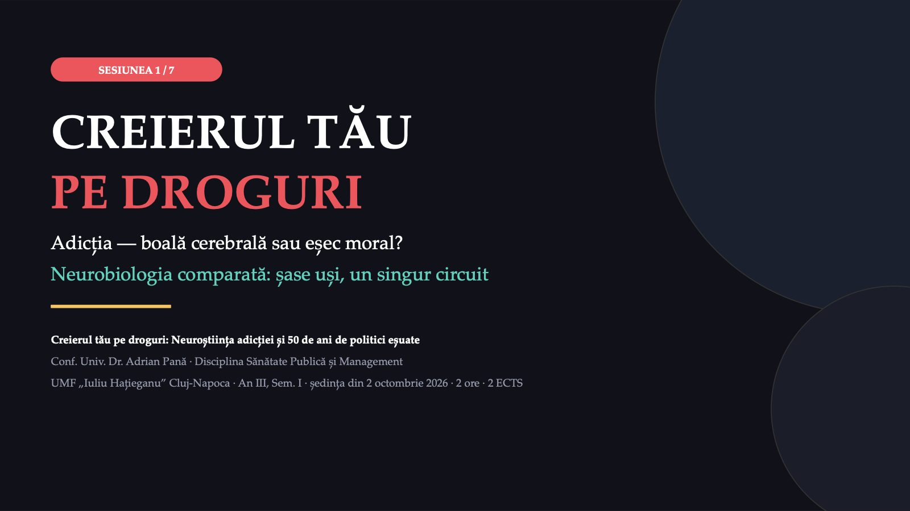
1 / 59Ce este și ce nu este acest curs?
![ÎNAINTE SĂ ÎNCEPEM Ce este și ce nu este acest curs? NU este ESTE ✕ O oră de educație antidrog Nu veți primi instrucțiuni despre cum să trăiți. ✕ O pledoarie pentru sau împotriva legalizării Nu se predă nicio doctrină. Dezbaterea vine în Sesiunea 3. ✕ O listă de mecanisme de memorat Mecanismele sunt exemple. Raționamentul este materia. ✓ Un antrenament de citit cifre Veți învăța să distingeți o dovadă de o afirmație foarte citată. ✓ O pregătire pentru rețeta pe care o veți semna Peste câțiva ani veți prescrie benzodiazepine și opioide. ✓ O verificare a propriilor percepții Veți afla, anonim, cât de departe sunteți de date.](diapozitive/C01/002.jpg) 2 / 59
2 / 59Nu se predă nicio doctrină. Aveți deja opinii despre droguri: vă cer să le suspendați pe durata cursului, nu să renunțați la ele.
Contractul didactic
![REGULILE SĂLII Contractul didactic 1 Nu vi se va cere niciodată să spuneți ceva despre voi Fără ridicări de mână la întrebări personale. Voturile Mentimeter sunt anonime. 2 Nu se administrează niciun instrument de screening Nici AUDIT, nici DAST-10, nici CAGE — nici măcar anonim. Lucrăm exclusiv pe viniete clinice fictive. 3 Puteți ieși din sală oricând, fără explicații Nu vă afectează prezența și nu trebuie să-mi spuneți de ce. 4 Fișa de resurse a fost distribuită la intrare Patru locuri unde puteți vorbi cu cineva. Înainte de primul diapozitiv cu cifre — deliberat. O precizare de conținut, nu o regulă: substanțele psihoactive nu sunt străine vieții obișnuite. DSM-5 a inclus tulburarea de sevraj la cofeină, iar sistemul dopaminergic activat de aproape toate drogurile de abuz este activat și de hrană și de interacțiunea sexuală.](diapozitive/C01/003.jpg) 3 / 59
3 / 59Nu se administrează niciun instrument de screening, nici măcar anonim; lucrăm exclusiv pe viniete clinice fictive. Fișa primită la intrare are patru locuri unde puteți vorbi cu cineva.
Harta celor două ore
![PARCURSUL Harta celor două ore 0–12' Calibrare Cifra unică. Vietnam. Mentimeter anonim, cinci itemi. 12–18' Cinci noțiuni Ce trebuie să știți ca să citiți tabelele de azi. 18–48' Istoria unui concept 1971 · 1997 · 2013 și 2022 · 2016. 48–82' Șase uși, un circuit Mecanismele, trei rezultate incomode, cine devine dependent. 82–104' Aplicați Același dosar, patru substanțe. Un diagnostic, trei regimuri juridice. 104–120' Sinteză Ce rămâne. Kahoot, 20 de itemi. Pauză de 10 minute între „Istoria unui concept” și „Șase uși, un circuit”. Segmentul „Aplicați” nu se reduce.](diapozitive/C01/004.jpg) 4 / 59
4 / 59Aceasta este harta celor două ore. Revin la ea la fiecare separator, ca să știți unde ne aflăm.
01
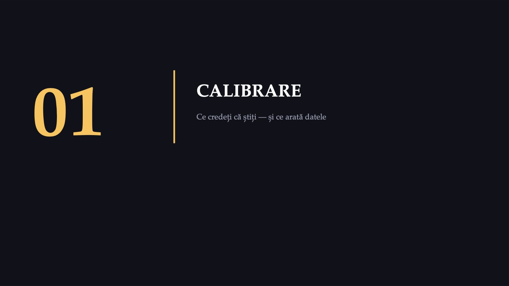
5 / 59Partea aceasta nu conține niciun mecanism: cifrele despre militarii din Vietnam și cinci întrebări.
Cât de bine estimați?
![MENTIMETER ANONIM · 5 ÎNTREBĂRI Cât de bine estimați? M1 Ce procent dintre cei care au consumat vreodată nicotină ajung dependenți? M2 Ce procent dintre cei care au consumat vreodată canabis ajung dependenți? M3 Ce procent dintre persoanele dependente de cocaină ajung, de-a lungul vieții, în remisie? M4 Care substanță are cel mai mare scor de daună totală în analiza britanică din The Lancet? M5 Explicația biologică a problemelor psihice, inclusiv a dependenței, reduce stigmatizarea? Voturile sunt anonime. Trei dintre cei cinci itemi se reiau în Kahoot-ul final; votul „boală sau alegere?” se reia în Sesiunea 7.](diapozitive/C01/006.jpg) 6 / 59
6 / 59Votați fără să căutați nimic: contează estimarea voastră de acum. Nu comentăm rezultatele acum; revenim la ele pe parcursul ședinței și în Kahoot-ul final.
5%
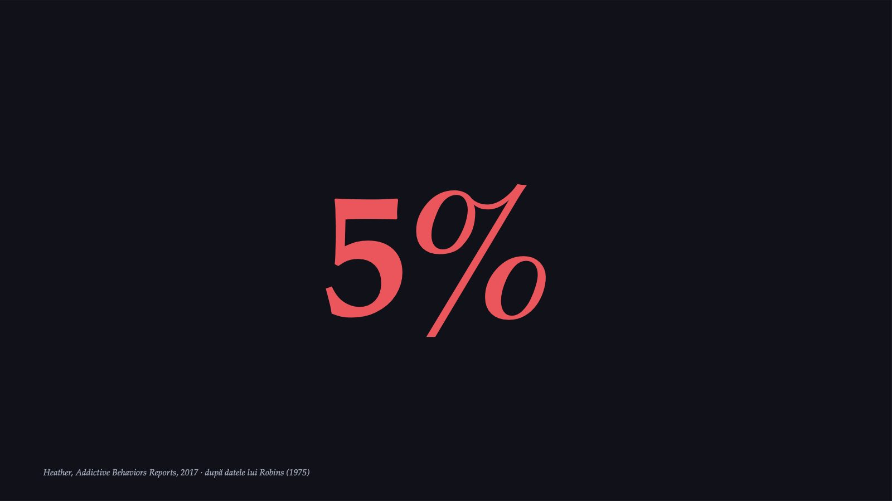
7 / 595%
![DESCHIDERE · 1971 898 de interviuri cu militari întorși din Vietnam, lucrarea din 1975 1% consumaseră regulat opiacee înainte de înrolare 20% au devenit consumatori regulați în Vietnam 14% dintre cei cu test urinar pozitiv la plecare au redevenit dependenți 88% nu reluaseră consumul regulat de opiacee la trei ani În primul an după întoarcerea în Statele Unite: 5% dintre cei dependenți în Vietnam mai erau dependenți. Consumul și dependența au scăzut, în esență, la nivelurile dinaintea plecării. Drogul nu devenise indisponibil acasă; tratamentul nu explică rata scăzută a redevenirii dependenței. Robins, Helzer și Davis, Arch Gen Psychiatry, 1975 · Robins, 1993 · Heather, Addict Behav Rep, 2017](diapozitive/C01/008.jpg) 8 / 59
8 / 59În Vietnam, aproape jumătate dintre militari au încercat narcotice, iar unul din cinci a raportat dependență de opiacee. În primul an după întoarcerea acasă, numai 5% dintre cei dependenți în Vietnam mai erau dependenți: consumul și dependența au scăzut, în esență, la nivelurile dinaintea plecării.
Dacă adicția este o boală cerebrală,
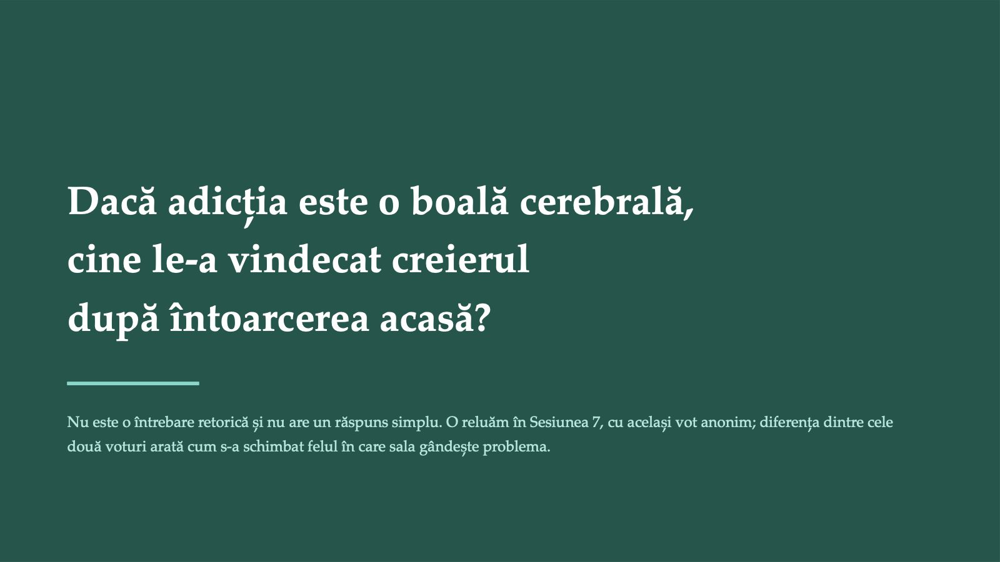
9 / 59Nu răspund acum la această întrebare. Răspunsul se construiește pe parcursul celor două ore, iar votul îl reluăm în Sesiunea 7. Un răspuns provizoriu, pe care îl rafinăm în restul ședinței: o tulburare cu un substrat cerebral real, a cărei evoluție depinde de om, de substanță și de context (interpretare).
Percepțiile nu sunt date — nici ale voastre, nici ale mele
![DE CE AM FĂCUT ASTA Percepțiile nu sunt date — nici ale voastre, nici ale mele De unde vine estimarea pe care tocmai ați dat-o? 1 Din ce ați văzut în presă Presa relatează mai ales cazuri, nu distribuții. O supradoză devine știre; persoanele care nu au devenit dependente nu devin. 2 Din ce v-a spus cineva la un curs Inclusiv eu, astăzi. Motiv pentru care fiecare cifră din această sesiune poartă sursa pe același diapozitiv. 3 Din euristica disponibilității Estimăm frecvența după cât de ușor ne vine în minte un exemplu. Un exemplu memorabil nu arată cât de frecvent este fenomenul. Regula care se aplică de aici înainte, inclusiv mie: fiecare cifră poartă sursa pe același diapozitiv. Dacă nu o vedeți, întrebați.](diapozitive/C01/010.jpg) 10 / 59
10 / 59Nu vi se cere să mă credeți, vi se cere să verificați. De aici înainte, fiecare cifră are sursa pe același diapozitiv; dacă nu o vedeți, întrebați.
02
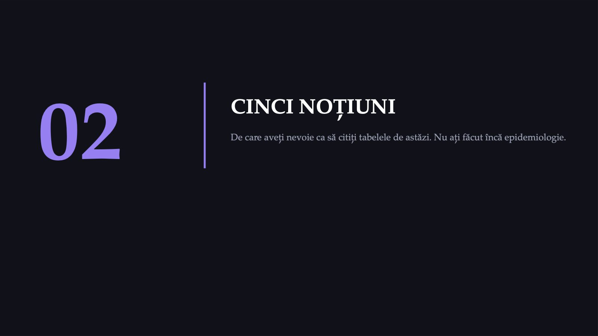
11 / 59Cinci noțiuni, câte un minut fiecare. Nu facem statistică: învățăm ce facem cu un tabel atunci când îl citim.
Interval de încredere
![NOȚIUNEA 1 / 5 Interval de încredere Cât de precisă e o estimare. Se scrie „IÎ 95%”. Valori ipotetice: un studiu găsește valoarea 3,2, cu IÎ 95% între 2,2 și 4,7. Intervalul cuprinde valorile compatibile cu datele: repetat de multe ori, studiul ar produce intervale care cuprind valoarea reală în aproximativ 95% din cazuri. Marginile contează la fel de mult ca valoarea din mijloc. NU INCLUDE 1 · EXEMPLU REAL 2,84 – 5,34 Raportul șanselor 3,90 pentru psihoză, la consumul cel mai intens de canabis. INCLUDE 1 · VALORI IPOTETICE 0,99 – 2,00 Datele nu exclud absența efectului. Regula pentru azi: un interval care nu include 1 este un indiciu de semnificație statistică; unul care include 1 nu dovedește absența efectului, ci doar nu o exclude. du Prel și colab., Dtsch Arztebl Int, 2009 · Szumilas, J Can Acad Child Adolesc Psychiatry, 2010 · exemplul real: Marconi și colab., Schizophr Bull, 2016](diapozitive/C01/012.jpg) 12 / 59
12 / 59Revenim la această regulă de fiecare dată când apare un interval pe ecran: un interval care include 1 nu dovedește absența efectului, doar nu o exclude.
OR și RR
![NOȚIUNEA 2 / 5 OR și RR Rapoarte între două grupuri: riscul relativ compară riscuri, raportul șanselor compară șanse. 1 înseamnă „la fel în ambele grupuri”. CIFRA CE ÎNSEAMNĂ EXEMPLU DIN SESIUNEA DE AZI = 1 Aceeași frecvență în ambele grupuri. — = 2 De două ori mai des în grupul expus. risc dublu (valori ipotetice) = 0,5 De două ori mai rar: compatibil cu un efect protector. risc la jumătate (valori ipotetice) 3,90 Șanse de aproape patru ori mai mari (raportul șanselor). psihoză la consumul cel mai intens de canabis Pentru tabelele de azi, diferența tehnică dintre OR și RR contează mai puțin decât poziția valorii 1 față de intervalul de încredere. NCI Dictionary of Cancer Terms · Szumilas, 2010 · exemplul: Marconi și colab., Schizophr Bull, 2016](diapozitive/C01/013.jpg) 13 / 59
13 / 59Pentru azi, rețineți poziția valorii 1 față de interval; diferența tehnică dintre raportul șanselor și riscul relativ o lăsăm deoparte.
Mărimea efectului
![NOȚIUNEA 3 / 5 Mărimea efectului Cât de mare e diferența, nu doar dacă există. Se scrie „g” sau „d”. O diferență poate fi reală și, în același timp, prea mică pentru a conta în practică. Mărimea efectului răspunde la această a doua întrebare; pragurile lui Cohen sunt orientative, iar un efect mic poate avea consecințe importante. g ≈ 0,2 mic prag convențional g ≈ 0,5 mediu prag convențional g ≈ 0,8 mare prag convențional Semnul contează g negativ înseamnă că lucrul măsurat scade; g pozitiv, că crește. Veți vedea azi, în aceeași meta-analiză, g = −0,324 și g = +0,263 — aceeași explicație, două efecte în direcții opuse. Lakens, Front Psychol, 2013 · valorile g: Kvaale și colab., Clin Psychol Rev, 2013](diapozitive/C01/014.jpg) 14 / 59
14 / 59Veți revedea mărimea efectului într-un grafic despre stigmatizare; atunci îl veți putea citi singuri.
Transversal sau longitudinal
![NOȚIUNEA 4 / 5 Transversal sau longitudinal O fotografie sau un film. Diferența decide dacă poți vorbi despre cauză. TRANSVERSAL — o fotografie Măsori un lucru o singură dată, la un moment dat. Afli CĂ două lucruri merg împreună. Nu afli care a fost primul. LONGITUDINAL — un film Măsori de mai multe ori, în timp, la aceiași subiecți. Afli ce a fost ÎNTÂI. Asta permite discuția despre cauză. De ce contează azi Veți vedea o imagine de creier care arată o diferență reală la persoanele cu dependență. Studiul e transversal — o fotografie. Nu poate spune dacă diferența a apărut din cauza drogului sau exista dinainte. Două studii longitudinale au răspuns la această întrebare la maimuțe.](diapozitive/C01/015.jpg) 15 / 59
15 / 59Dintre cele cinci noțiuni, aceasta contează cel mai mult: diferența dintre o fotografie și un film se aplică la tot restul cursului.
Meta-analiză
![NOȚIUNEA 5 / 5 Meta-analiză Un studiu al studiilor. Adună rezultatele mai multor cercetări într-o singură cifră. Când un singur studiu are prea puțini participanți ca să fie convingător, se adună rezultatele mai multor studii pe aceeași temă. Cifra care rezultă e mai stabilă decât oricare dintre ele luată separat. Trei întrebări, în această ordine, de fiecare dată când auziți „meta-analiza arată că…” 1 Câte studii? Mai multe studii reunite dau o estimare mai stabilă decât oricare dintre ele. 2 Cât de asemănătoare sunt? Dacă studiile măsoară lucruri diferite, adunarea lor nu are sens. 3 Ce calitate au? Douăzeci de studii slabe rămân douăzeci de studii slabe. De aici încolo, fiecare cifră de pe fiecare diapozitiv are sursa afișată dedesubt. Dacă nu o vedeți, întrebați.](diapozitive/C01/016.jpg) 16 / 59
16 / 59Ultima noțiune. De aici încolo, fiecare cifră are sursa afișată dedesubt; dacă nu o vedeți, întrebați.
03
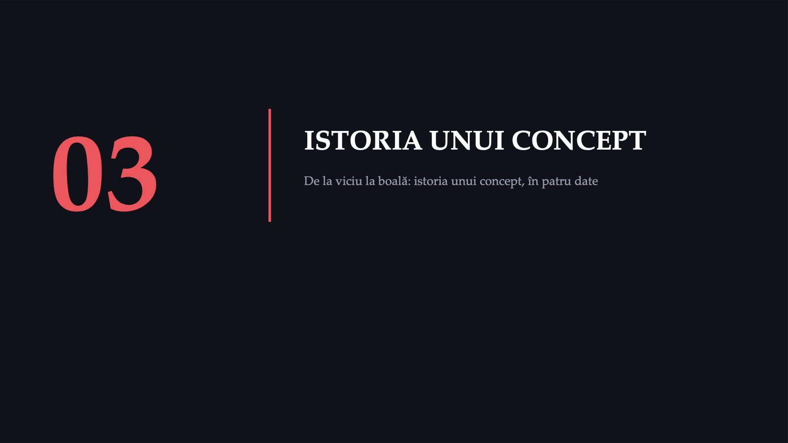
17 / 59În partea aceasta nu vorbim despre creier. Vorbim despre istoria unui concept: cum a ajuns dependența să fie descrisă ca boală.
155 mil. $
![1971 · SURSĂ PRIMARĂ 17 iunie 1971 — Briefing Room, Casa Albă „America's public enemy number one in the United States is drug abuse. In order to fight and defeat this enemy, it is necessary to wage a new, all-out offensive." 155 mil. $ suplimentari ceruți Congresului > 350 mil. $ buget total anunțat în aceeași zi 1971 + 55 ani până în 2026 — contorul disciplinei Rețineți data. Revine la fiecare sesiune a acestui curs, sub forma unui contor. Nixon R. „Remarks About an Intensified Program for Drug Abuse Prevention and Control”, 17 iunie 1971; „Special Message to the Congress”, aceeași zi (total de 371 mil. $). The American Presidency Project, UC Santa Barbara](diapozitive/C01/018.jpg) 18 / 59
18 / 59În aceeași zi, briefingul de presă al Casei Albe a fost susținut de John D. Ehrlichman, Egil Krogh Jr. și dr. Jerome Jaffe. Pe Ehrlichman îl reîntâlnim pe diapozitivul următor.
„Consilierul lui Nixon a recunoscut-o”
![AȚI CREDE ACEST TITLU? · 1 DIN 4 „Consilierul lui Nixon a recunoscut-o” Aceeași afirmație, două coloane. Prima e cea care circulă. ? CE SE CITEAZĂ Campania și administrația Nixon ar fi avut „doi dușmani”: stânga antirăzboi și populația de culoare. Asocierea hipioților cu marijuana și a populației de culoare cu heroina, apoi incriminarea severă a ambelor, ar fi permis perturbarea acestor comunități. Atribuit lui John Ehrlichman, consilier al lui Nixon. Publicat de Dan Baum în Harper's Magazine, numărul din aprilie 2016. ✕ CE NU SE CITEAZĂ — Publicat la 22 de ani după interviu — Ehrlichman murise în 1999 — Sursa: notițele jurnalistului, revăzute pentru articol — Familia Ehrlichman l-a contestat public — Trei foști oficiali Nixon l-au contestat: Donfeld · Jaffe · DuPont Contestările și replica nu sunt dovezi independente: autenticitatea citatului rămâne disputată. Argumentul despre aplicarea diferențiată a legii penale nu are nevoie de acest citat. Baum D. „Legalize It All”. Harper's Magazine, aprilie 2016 · declarația familiei: CNN, 23 martie 2016 · declarația Donfeld–Jaffe–DuPont: HuffPost, 25 martie 2016 · Baum: nu avea motive să creadă că Ehrlichman fusese nesincer](diapozitive/C01/019.jpg) 19 / 59
19 / 59Primul dintre cele patru titluri pe care le citim critic în ședința de azi: prima dată în acest curs, dar nu ultima.
Saltul de la mecanism la politică publică
![1997 · SCIENCE Saltul de la mecanism la politică publică „Addiction is a brain disease, and it matters” — construcția argumentului, în trei trepte. AFIRMAȚIE DESPRE MECANISM Consumul repetat produce modificări persistente în structura și funcția creierului. ▶ AFIRMAȚIE DESPRE PERSOANĂ Aceste modificări explică de ce persoana continuă în ciuda consecințelor. ▶ CONCLUZIE DE POLITICĂ Prin urmare, dependența trebuie abordată ca problemă medicală (reconstrucție). Cel mai important lucru pe care îl învățați astăzi O afirmație despre mecanism susține o concluzie despre politică. Saltul nu este invalid — dar nu este nici automat: are nevoie de premise suplimentare, care rareori sunt enunțate. Îl veți vedea făcut în ambele direcții pe parcursul cursului. În același număr al revistei, Koob și Le Moal descriu adicția ca dereglare progresivă a sistemelor recompensei; în 2001, aceiași autori propun conceptul de alostază: un punct de echilibru al recompensei deplasat cronic. Toleranța și sevrajul apar astfel ca expresii ale unui echilibru deplasat (interpretare). Leshner, Science, 1997 · Koob și Le Moal, Science, 1997 · Koob și Le Moal, Neuropsychopharmacology, 2001 · DOI-urile, confirmate după identificator, sunt în registrul notelor](diapozitive/C01/020.jpg) 20 / 59
20 / 59Cuvântul important este „prin urmare”. Ce premisă lipsește ca să treceți de la mecanism la politică?
2–3
![2013 · 2022 Un continuum, nu o linie naturală între „consumator” și „dependent” DSM-IV Abuz de substanțe · Dependență de substanțe. Două categorii separate. O linie între ele. DSM-5 (2013) → DSM-5-TR (2022) Tulburare de Uz de Substanțe — un continuum, 11 criterii. Craving adăugat. Criteriul „probleme legale” eliminat. 2–3 criterii = ușoară 4–5 criterii = moderată ≥ 6 criterii = severă Exemplu: în ultimele 12 luni, cantități mai mari decât intenția, două încercări nereușite de a reduce, absențe repetate de la seminarii din cauza consumului și toleranță: patru criterii, tulburare moderată. Pragul este convențional: de o parte și de alta a lui nu se află „ei” și „noi”. APA: DSM-5, 17 mai 2013; DSM-5-TR, 18 martie 2022, ediția în vigoare · criteriile și pragurile: Hasin și colab., Am J Psychiatry, 2013, și ghidul NYSDOH (McNeely și colab., 2024), nu manualul tipărit](diapozitive/C01/021.jpg) 21 / 59
21 / 59Exemplul ilustrează continuumul: formularea este impersonală, iar pragul este convențional.
Dezbaterea nu e între știință și obscurantism
![2013–2016 · LANCET PSYCHIATRY Dezbaterea nu e între știință și obscurantism În mare parte, aceleași reviste și aceleași date. MODELUL Volkow, Koob și McLellan N Engl J Med, 2016 Koob și Volkow Lancet Psychiatry, 2016 Bibliografie obligatorie: Koob și Volkow 2016; Hall și colab. 2015; Volkow și Koob 2015. CRITICA Hall, Carter și Forlini Lancet Psychiatry, 2015 „Is it supported by the evidence and has it delivered on its promises?” REPLICA Volkow și Koob Lancet Psychiatry, 2015 „Why is it so controversial?” Și critica filosofică: Levy Front Psychiatry, 2013 Dacă cineva vă prezintă modelul ca necontestat — sau critica lui ca negaționism — verificați dacă a citit ambele. DOI-urile celor cinci lucrări, confirmate după identificator, sunt în registrul notelor de curs.](diapozitive/C01/022.jpg) 22 / 59
22 / 59Cele trei lucrări obligatorii sunt în bibliografia cursului. Observați că modelul, critica și replica au apărut, în mare parte, în aceleași reviste, la un an distanță.
04
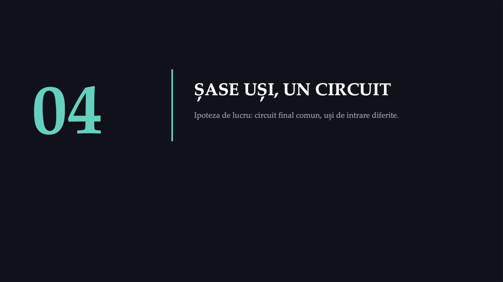
23 / 59Ipoteza acestei părți, formulată de autorii studiului de microdializă, o verificăm la final: circuitul final este comun, calea de intrare nu este. Din confuzia dintre cele două provin mai multe dintre afirmațiile eronate de azi (interpretare).
Creșterea dopaminei în nucleul accumbens
![MICRODIALIZĂ · 1988 Creșterea dopaminei în nucleul accumbens Șobolani care se deplasează liber. Bazal: 0,20 ± 0,02 pmol dopamină / 20 min (grupul cu amfetamină). N = 4–6 per condiție Valorile apar în textul articolului, la doze unice, neechivalente. Creșterea este preferențială în nucleul accumbens față de nucleul caudat: ×5,5 · ×2,5 · +50%. MORFINĂ · METADONĂ · ETANOL Creștere preferențială în nucleul accumbens; mărimea apare numai grafic, în figurile 4 și 6. Di Chiara și Imperato, Proc Natl Acad Sci USA, 1988 · valorile: secțiunea „Results”; nivelul bazal: legenda figurii dedicate amfetaminei](diapozitive/C01/024.jpg) 24 / 59
24 / 59Acesta este studiul citat pentru „drogurile cresc dopamina”. Ordinea amfetamină, cocaină, nicotină privește dozele unice din studiu, care nu sunt echivalente; o comparăm la final cu alte două ierarhii. Pentru nicotină, +100% înseamnă aproximativ de două ori nivelul bazal.
Două lucruri pe care nu le găsiți în articol
![AȚI CREDE ACEST TITLU? · 2 DIN 4 Două lucruri pe care nu le găsiți în articol Ambele privesc exact studiul de pe diapozitivul anterior. 1 Cifrele pentru morfină și etanol Articolul nu tipărește procente pentru morfină și etanol: creșterea apare numai grafic, în figurile 4 și 6. O cifră care apare în multe prezentări ce citează același articol nu apare, prin aceasta, în articol. 2 Opioidele care SCAD dopamina În același studiu, agoniștii receptorilor kappa — U-50,488, bremazocina, tifluadomul — au scăzut dopamina în nucleul accumbens și în caudat și au produs hipomotilitate. Sunt opioide. Scad dopamina. La animale au efecte aversive; la om, un agonist kappa a produs disforie (studiu din 1986). „Opioidele cresc dopamina” este fals ca formulare generală. Contează subtipul de receptor — aceeași clasă conține molecule cu efecte opuse pe exact circuitul despre care vorbim. Di Chiara și Imperato, Proc Natl Acad Sci USA, 1988, figurile 4 și 6 · Pfeiffer și colab., Science, 1986](diapozitive/C01/025.jpg) 25 / 59
25 / 59Al doilea titlu. Formularea „opioidele cresc dopamina” este falsă ca regulă generală: contează subtipul de receptor. La om, un agonist kappa a produs disforie, într-un studiu din 1986.
Cine face ce, înainte ca dopamina să crească
![MECANISMUL PROXIMAL · 1 DIN 2 Cine face ce, înainte ca dopamina să crească Opioide (μ) Johnson și North J Neurosci, 1992 Agonism μ pe interneuronii GABA-ergici din VTA → hiperpolarizarea lor → DEZINHIBIȚIA neuronilor dopaminergici. Neuronii DA nu sunt afectați direct. Cocaină Ritz și colab. Science, 1987 Blocarea transportorului de dopamină (DAT). Potența în autoadministrare corelează cu inhibarea legării la DAT striatal, nu cu alte situsuri pre- sau postsinaptice. Nicotină Picciotto și colab., Nature, 1998 Tapper și colab., Science, 2004 Receptori nAChR conținând subunitatea β2, pe neuronii DA din VTA. La șoarecii fără β2, nicotina nu mai eliberează dopamină în striatul ventral; activarea receptorilor α4, făcuți hipersensibili, e suficientă pentru recompensă. Continuare pe diapozitivul următor: THC, alcool, benzodiazepine — cele trei cazuri care strică orice regulă simplă](diapozitive/C01/026.jpg) 26 / 59
26 / 59După al doilea tabel vă întreb ce au în comun agoniștii opioizi μ și benzodiazepinele. Pentru fiecare clasă există și o sinteză recentă: Volkow, Michaelides și Baler, 2019.
Trei cazuri care strică orice regulă simplă
![MECANISMUL PROXIMAL · 2 DIN 2 Trei cazuri care strică orice regulă simplă THC Pertwee Br J Pharmacol, 2008 Agonist PARȚIAL al receptorilor CB1 și CB2; prin CB1 presinaptici poate inhiba eliberarea neurotransmițătorilor. Răspunsul depinde de nivelul de expresie și de eficiența receptorilor și de eliberarea în curs a endocanabinoizilor. Alcool Vengeliene și colab. Br J Pharmacol, 2008 NU are un receptor unic. Ținte primare documentate: NMDA, GABA-A, glicină, 5-HT3, nAChR, canale de calciu tip L, canale GIRK. Urmează un „al doilea val” de efecte indirecte. Benzodiazepine Tan și colab., Nature, 2010 Löw și colab., Science, 2000 Engin și colab., 2014 · Engin, 2023 La șoarece: modulare alosterică pozitivă a GABA-A pe interneuronii din VTA → dezinhibiție prin α1 (Tan 2010). Recompensa cere și α2, posibil α3 (Engin 2023). Șase mecanisme moleculare diferite; ipoteza unui punct de convergență.](diapozitive/C01/027.jpg) 27 / 59
27 / 59Alcoolul demontează orice model „un drog, un receptor”: dacă cineva vă spune că alcoolul acționează pe GABA, întrebați care dintre cele șapte ținte. Pentru benzodiazepine, datele sunt de la șoarece: dezinhibiția din aria tegmentală ventrală depinde de α1, dar recompensa cere și α2, posibil α3 (Engin, 2023), deci nu se separă de efectul anxiolitic pe subunități. Pentru fiecare clasă există și o sinteză recentă: Volkow, Michaelides și Baler, 2019.
Două clase pe care le veți prescrie amândouă
![COMPARAȚIE Două clase pe care le veți prescrie amândouă Priviți primul și ultimul rând al tabelului anterior. Aceeași țintă, aceeași strategie. AGONIȘTI OPIOIZI μ BENZODIAZEPINE Ținta moleculară receptor μ-opioid (felii de creier de șobolan) receptor GABA-A: α1 pentru dezinhibiția din ATV (șoarece); recompensa cere și α2, posibil α3 Celula-țintă interneuronii GABA-ergici din VTA interneuronii GABA-ergici din VTA Ce fac cu ei hiperpolarizare, prin receptorii μ modulare pozitivă GABA-A, care le reduce activitatea Efectul net dezinhibiția neuronului dopaminergic dezinhibiția neuronului dopaminergic Neuronul DA e stimulat direct? nu nu Niciuna nu stimulează direct neuronul dopaminergic: amândouă reduc activitatea paznicului GABA-ergic care îl ține în frâu. Johnson și North, J Neurosci, 1992 · Tan și colab., Nature, 2010 · Engin, 2023](diapozitive/C01/028.jpg) 28 / 59
28 / 59Aici neurobiologia devine relevantă clinic: veți prescrie amândouă clasele. Consecința o vedem pe diapozitivul următor. Pentru benzodiazepine, subunitatea α1 explică dezinhibiția din ATV, la șoarece, nu recompensa în întregime.
O rețetă de alprazolam prelungită „ca să treacă perioada asta”
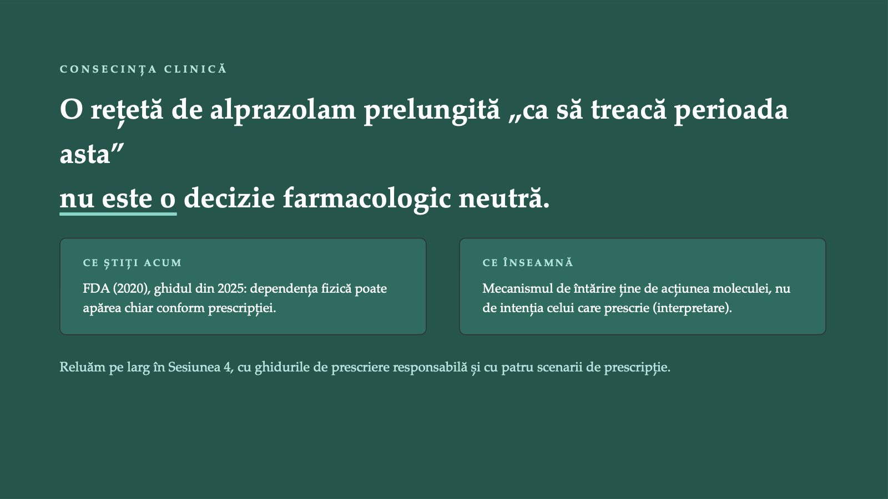
29 / 59Firul „cine semnează” apare aici prima dată. Revine în Sesiunea 4, cu medicul care reînnoiește rețeta, în Sesiunea 6, cu medicul care refuză pacientul, și în Sesiunea 7, cu decidentul care semnează politica.
Linia 1
![CÂND SEVRAJUL POATE FI FATAL Sevrajul alcoolic: aici distincția nu e academică Ghidul ASAM (2020) pentru sevrajul alcoolic. Linia 1 benzodiazepinele: tratamentul de primă linie în sevrajul alcoolic; reduc convulsiile și delirul Adjuvant antipsihoticele: numai adăugate, nu ca tratament unic al delirului; scad pragul convulsivant ASAM, J Addict Med, 2020 Sevrajul alcoolic sever poate pune viața în pericol: convulsii, delir, deces. BENZODIAZEPINE: AVERTISMENTUL FDA ȘI O LIMITĂ A DATELOR FDA: dependența fizică poate apărea chiar la administrarea conform prescripției; întreruperea bruscă sau reducerea prea rapidă a dozei poate produce reacții de sevraj, inclusiv convulsii, care pot pune viața în pericol. Doza se reduce treptat, după un plan individualizat (FDA; ghidul ASAM, 2025). Estimări de mortalitate nu au fost identificate. Sevrajul la opioide, „severely distressing”, prin hiperactivitate noradrenergică: Kosten și Baxter, Am J Addict, 2019 · FDA, comunicare de siguranță, 2020 · ghidul ASAM pentru alcool, J Addict Med, 2020 · ghidul ASAM pentru benzodiazepine, J Gen Intern Med, 2025](diapozitive/C01/030.jpg) 30 / 59
30 / 59În sevrajul alcoolic, benzodiazepinele sunt tratamentul de primă linie. Antipsihoticele se pot adăuga când delirul nu este controlat, dar nu ca tratament unic, pentru că scad pragul convulsivant (ghidul ASAM, 2020). Avertismentul FDA: dependența fizică de benzodiazepine poate apărea chiar la administrarea conform prescripției, iar întreruperea bruscă sau reducerea prea rapidă a dozei poate produce reacții de sevraj, inclusiv convulsii, care pot pune viața în pericol. Doza se reduce treptat, după un plan individualizat și cu monitorizarea pacientului. Estimări de mortalitate pentru sevrajul la benzodiazepine nu am identificat: când lipsește cifra, spunem că lipsește.
05
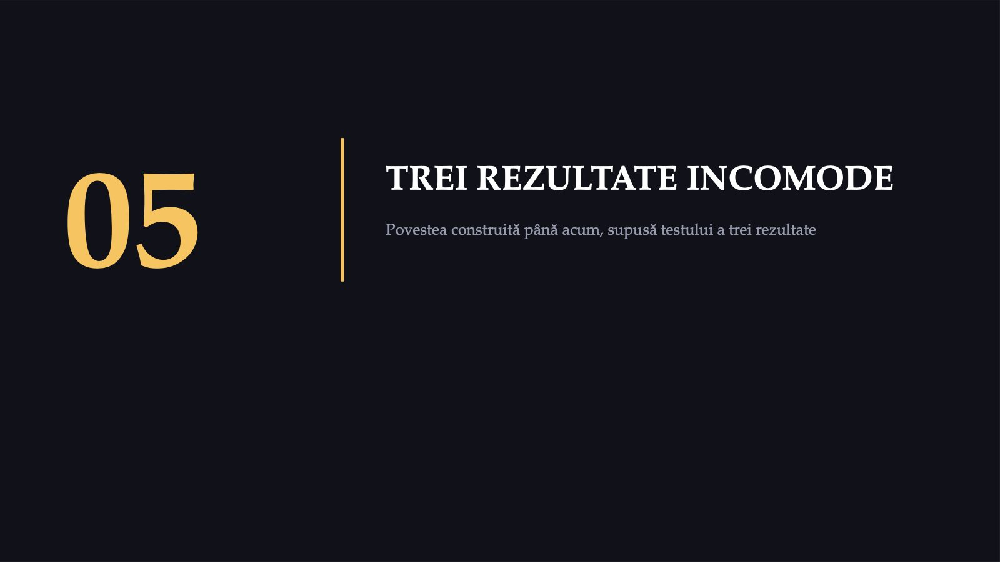
31 / 59Până acum am construit o poveste coerentă. Următoarele trei rezultate o pun la încercare.
Patru studii PET și SPET. Un rezultat incomod.
![CIFRA ÎNTÂI · THC LA OM Patru studii PET și SPET. Un rezultat incomod. STUDIU REVISTĂ N DOZĂ REZULTAT Bossong 2009 Neuropsychopharmacology 7 8 mg inhalat 3,4% striat limbic · 3,9% putamen Stokes 2009 NeuroImage 13 10 mg oral FĂRĂ efect semnificativ Barkus 2011 J Psychopharmacol 11 (9) 2,5 mg i.v. FĂRĂ diferență semnificativă Bossong 2015 Psychopharmacology 19 reunite 3,65% striat limbic · p = 0,023 Studiile la om din sinteză au folosit ≤ 10 mg THC, față de ≈ 1 mg/kg în microdializa la animale: comparația nu este echivalentă ca doză. Sinteza narativă din Nature (2016): analiza reunită arată eliberare de dopamină; rezultatul negativ SPECT poate ține de eșantionul mic (n = 9). Bloomfield și colab., Nature, 2016 · Bossong și colab., 2009 și 2015 · Stokes și colab., 2009 · Barkus și colab., 2011](diapozitive/C01/032.jpg) 32 / 59
32 / 59Canabisul este drogul ilicit cel mai consumat în Europa. Dacă toate drogurile de abuz ar crește dopamina pe aceeași cale finală, ce ar trebui să vedem la om după THC? Studiile de imagistică arată un efect mic și inconstant; autorii din 2009 au sugerat că ar fi o proprietate potențial adictivă comună cu alte droguri.
Cât deplasează fiecare substanță raclopride la om
![COMPARATORUL Cât deplasează fiecare substanță raclopride la om Reducerea legării de [11C]raclopride — proxy pentru dopamina eliberată. Amfetamină 10–15% Alcool 10–15% Nicotină ≈ 10% THC 3,7% Autorii analizei reunite: la animale, THC crește dopamina din striat cu 25–100%, compatibil cu efectul mic de la om. THC < alcool și în dependență (canabis < alcool); discordanța: nicotină față de cocaină (interpretare). Comparator citat din Bossong și colab., Psychopharmacology, 2015. Nu concluzionăm că THC e inofensiv — aceea ar fi eroarea inversă, la fel de gravă.](diapozitive/C01/033.jpg) 33 / 59
33 / 59Înainte de rezultat, o întrebare: dacă THC deplasează raclopridul de câteva ori mai puțin decât alcoolul, ce ar trebui să însemne asta pentru probabilitatea de dependență?
„Iată ce fac drogurile creierului tău”
![AȚI CREDE ACEST TITLU? · 3 DIN 4 „Iată ce fac drogurile creierului tău” Imaginea tomografică a receptorilor D2 la persoanele dependente de cocaină. ✓ CE ARATĂ IMAGINEA Disponibilitate redusă a receptorilor D2 la persoanele dependente de cocaină, persistentă 3–4 luni după dezintoxicare, asociată cu metabolism redus orbitofrontal și cingulat. Volkow și colab., Synapse, 1993 ✕ CE NU POATE ARĂTA Studiul este TRANSVERSAL. Nu poate spune dacă receptorii erau așa înainte de expunere. Orice prezentare care afișează acest scan cu subtitlul „iată ce fac drogurile creierului tău” afirmă ceva ce imaginea nu demonstrează. Două studii longitudinale au răspuns la această întrebare la maimuțe. Diapozitivul următor. Volkow și colab., Synapse, 1993 · N și mărimea efectului nu apar în rezumat; textul integral nu a fost consultat](diapozitive/C01/034.jpg) 34 / 59
34 / 59Al treilea titlu, cel mai important din punct de vedere metodologic: distincția dintre transversal și longitudinal se aplică la tot restul cursului. Reducerea disponibilității receptorilor D2 persistă luni după dezintoxicare și a fost observată și la rozătoare și la primate expuse repetat la droguri (Koob și Volkow, 2016): imaginea este reală; ce nu poate spune este ce a fost înainte de expunere.
Poziția socială a modificat neurochimia înainte de drog
![DOVADA LONGITUDINALĂ Poziția socială a modificat neurochimia înainte de drog 1 ÎNAINTE Cazați individual, cele 20 de animale NU difereau în disponibilitatea D2. 2 CAZARE SOCIALĂ D2 a CRESCUT la animalele devenite dominante. Fără schimbare la subordonați. 3 ABIA APOI COCAINĂ A funcționat ca întăritor la subordonați. NU a funcționat la dominanți. Iar Nader 2006, pe 12 macaci rhesus, arată cealaltă direcție: D2 bazal corelat NEGATIV cu rata autoadministrării ulterioare, apoi D2 scade cu 15–20% în prima săptămână și rămâne redus cu ≈ 20% pe parcursul unui an. INFERENȚA NOASTRĂ, NU AFIRMAȚIA AUTORILOR: D2 scăzut este și predictor preexistent, modelat de mediul social, și consecință a consumului. Un PET transversal la om nu poate separa cele două direcții. Morgan și colab., Nat Neurosci, 2002 · Nader și colab., Nat Neurosci, 2006](diapozitive/C01/035.jpg) 35 / 59
35 / 59Cel mai contraintuitiv rezultat al ședinței: cocaina nu a funcționat ca întăritor la animalele dominante. Același drog, aceeași specie, același laborator.
Dopamina nu este molecula plăcerii
![CIFRA A TREIA · DISOCIEREA Dopamina nu este molecula plăcerii WANTING Saliența stimulativă. Dorința motivată. Sisteme MARI și ROBUSTE, incluzând dopamina mezolimbică. Se sensibilizează cu consumul repetat. LIKING Plăcerea hedonică propriu-zisă. Sisteme MICI și FRAGILE, care NU depind de dopamină. Nu se sensibilizează în mod necesar. O DOVADĂ EXPERIMENTALĂ Șoarecii incapabili genetic să sintetizeze dopamină preferă zaharoza față de apă — și preferă și zaharina, care nu are calorii. Rata de lins, mărimea și durata seriilor sunt MAI MARI decât la controale. Ce fac mai puțin: inițiază mai rar seriile de lins și ling mai puțin în total. În acest cadru teoretic, dopamina nu produce plăcerea, ci urmărirea ei. Pacientul căruia nu îi mai face plăcere, dar continuă, nu minte neapărat (interpretare). Berridge și Robinson, Am Psychol, 2016 · Cannon și Palmiter, J Neurosci, 2003](diapozitive/C01/036.jpg) 36 / 59
36 / 59„Dopamina este molecula plăcerii” este una dintre cele mai răspândite simplificări ale neuroștiinței populare (interpretare). Șoarecii fără dopamină preferă în continuare zaharoza; ce fac mai puțin este să inițieze seriile de lins.
06
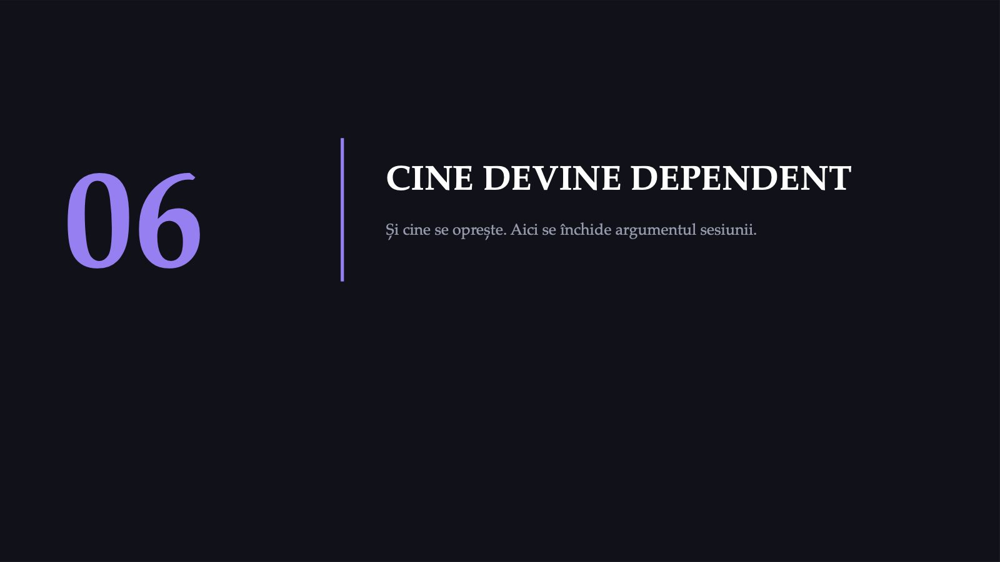
37 / 59Până acum am vorbit despre mecanism. Urmează partea despre destin: cine devine dependent și cine se oprește. Cele două nu se suprapun.
1 / 12
![DATE ACTUALE · UNODC 2026 · EUDA 2026 Consumul de droguri, astăzi: lumea și Uniunea Europeană 331 mil. au consumat un drog în 2024 · 6,2% (15–64 de ani) 256 mil. consumatori de canabis în 2024 63 mil. persoane cu tulburări de consum de droguri în 2024 8,7% adulți din UE (15–64 de ani) cu consum de canabis în ultimul an Accesul la tratament, 2024: 1 / 12 persoane cu tulburări de consum a primit o formă de tratament. Datele de consum provin din anchete prin autodeclarare: descriu consumul declarat, nu consumul măsurat. Pentru UE, cele mai recente date de țară provin din studii efectuate între 2015 și 2024. UNODC. World Drug Report 2026 (date pentru 2024) · EUDA. European Drug Report 2026, modulul „Canabis” (anchete naționale 2015–2024)](diapozitive/C01/038.jpg) 38 / 59
38 / 59Datele de consum provin din anchete: descriu consumul declarat, nu consumul măsurat. Iar tratamentul ajunge la o persoană din 12 cu tulburări de consum.
Decese și tratament: lumea și Uniunea Europeană
![DATE ACTUALE · DECESE ȘI TRATAMENT Decese și tratament: lumea și Uniunea Europeană 492 000 decese atribuite consumului de droguri în lume, 2023 172 500 dintre ele, decese directe ≥ 7 589 decese prin supradoză în UE, 2024 (estimare minimă) 505 000 persoane în tratament cu agoniști opioizi în UE, 2024 Decesele atribuite provin din estimările GBD preluate de UNODC; intervalul raportat de UNODC: 440 000–549 000. Decesele atribuite consumului, decesele directe și decesele prin supradoză sunt indicatori diferiți, calculați din surse diferite; nu se adună și nu se compară direct (interpretare). Pentru UE, 7 589 este o estimare minimă: țările raportează decesele după definiții și cu acoperiri diferite. UNODC. World Drug Report 2026 (estimări GBD 2023) · EUDA. European Drug Report 2026, modulele „Drug-induced deaths” și „Opioid agonist treatment”](diapozitive/C01/039.jpg) 39 / 59
39 / 59Nu adunăm aceste cifre: decesele atribuite, decesele directe și decesele prin supradoză sunt indicatori diferiți, calculați din surse diferite. Intervalul de 440 000–549 000 este cel raportat de UNODC pentru decesele din lume; intervalele IHME pentru România nu le reproducem.
2 260
![DATE ACTUALE · ROMÂNIA · RAPORTUL NAȚIONAL 2025 România, 2024: consum declarat, decese, solicitări de asistență 12,6% consum de droguri ilicite pe parcursul vieții (15–64 de ani) 5,7% consum în ultimul an dinaintea anchetei 6,7 · 2,3% canabis: pe parcursul vieții · în ultimul an 47 decese asociate consumului, 40 direct (8 instituții medico-legale) Asistență pentru consum de droguri, 2024: 2 260 solicitări, cu 33,1% mai puține decât în anul anterior; 44,3% au privit canabisul. Scăderea solicitărilor nu arată, singură, o scădere a nevoii de tratament. Prezentarea ANA din 2025 dă alte valori pentru aceeași anchetă: 12,3% și 5,4%. ANPCDDA. Raport național privind situația drogurilor în România 2025 (date pentru 2024) · ANA. Principalele rezultate ale studiului în populația generală 2024 (prezentare, 2025)](diapozitive/C01/040.jpg) 40 / 59
40 / 59Valorile sunt declarate de respondenți, iar decesele provin numai de la instituțiile medico-legale care au raportat.
67,5%
![SECVENȚA CENTRALĂ VOT · MENTIMETER Trei cifre și o întrebare Nicotină 67,5% din consumatorii pe viață ar deveni dependenți (SUA) Alcool 22,7% din consumatorii pe viață Canabis 8,9% din consumatorii pe viață Substanța de pe primul loc este legală și mai bine acceptată social. Care explicație este cea mai bine susținută? a Nicotina produce cea mai mare eliberare de dopamină dintre cele trei. b Nicotina este cea mai periculoasă substanță dintre cele trei. c Probabilitatea de dependență este o axă distinctă de dopamină și de daună. Lopez-Quintero și colab., Drug Alcohol Depend, 2011 · NESARC, valurile 1 și 2](diapozitive/C01/041.jpg) 41 / 59
41 / 59Votați înainte de graficul următor. Discutăm variantele după cele trei ierarhii.
Probabilitatea cumulativă de dependență, pe viață
![NESARC · CONSUMATORI PE VIAȚĂ, SUA Probabilitatea cumulativă de dependență, pe viață Nicotină N = 15 918 67,5% Alcool N = 28 907 22,7% Cocaină N = 2 259 20,9% Canabis N = 7 389 8,9% Proiecție pentru consumatorii pe viață din SUA: aproximativ nouă din zece care au consumat canabis nu ar dezvolta dependență; aproximativ șapte din zece care au consumat nicotină ar dezvolta-o. Lopez-Quintero și colab., Drug Alcohol Depend, 2011 · analiză de supraviețuire în timp discret · ARTICOLUL NU RAPORTEAZĂ IÎ pentru aceste probabilități cumulative — orice interval atașat lor ar fi inventat](diapozitive/C01/042.jpg) 42 / 59
42 / 59Articolul nu raportează intervale de încredere pentru aceste probabilități cumulative; orice interval atașat lor ar fi inventat. Este exemplul cel mai clar din curs pentru întrebarea „ce nu conține sursa?”.
O sută de oameni care au consumat cel puțin o dată
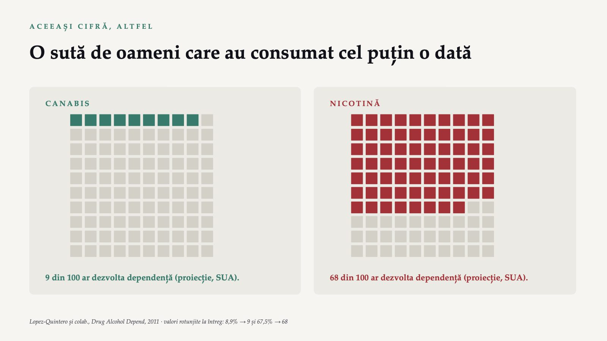
43 / 59Aceleași două cifre, ca suprafață: un procent este o abstracțiune, o sută de pătrate nu este.
83,7%
![REMISIA Remisia este evoluția cea mai frecventă (proiecții, SUA) 83,7% nicotină 90,6% alcool 97,2% canabis 99,2% cocaină Remisie = dispariția criteriilor, nu neapărat abstinența. La 10 ani: 18,4% (nicotină) · 37,4% · 66,2% · 75,8%; mediană ≈ 26 · 14 · 6 · 5 ani. Heyman a reanalizat aceleași date NESARC (nu e o confirmare independentă): timp de înjumătățire de 4 ani la cocaină, 6 la canabis, 16 la alcool. Mulți trec prin perioade de remisie și de recădere (Volkow și Blanco, 2023). Valorile sunt verificate în textul integral (manuscrisul de autor din PMC). Ponderea remisiilor fără tratament nu a fost verificată și nu se afișează. Lopez-Quintero și colab., Addiction, 2011 · Heyman, Front Psychiatry, 2013 · Volkow și Blanco, World Psychiatry, 2023](diapozitive/C01/044.jpg) 44 / 59
44 / 59Probabil că pacienții voștri nu au auzit aceste date. Ele pot contrabalansa efectul secundar al modelului biogenetic, pe care îl vedeți peste câteva diapozitive (interpretare). Remisia înseamnă dispariția criteriilor, nu neapărat abstinența, iar mulți trec prin perioade de remisie și de recădere (Volkow și Blanco, 2023).
Trei ierarhii care nu coincid
![AICI SE ÎNCHIDE ARGUMENTUL Trei ierarhii care nu coincid DUPĂ CREȘTEREA DE DOPAMINĂ Di Chiara 1988, doze unice 1 Amfetamină ×10 2 Cocaină ×3,5 3 Nicotină +100% 4 THC: 3,7% la om, altă metodă DUPĂ PROBABILITATEA DE DEPENDENȚĂ Lopez-Quintero 2011 1 Nicotină 67,5% 2 Alcool 22,7% 3 Cocaină 20,9% 4 Canabis 8,9% DUPĂ DAUNA TOTALĂ Nutt 2010 1 Alcool 72 / 100 2 Heroină 55 / 100 3 Crack cocaină 54 / 100 Clasamentele nu coincid, iar ordinea depinde de doză, de metodă și de orizontul de timp: în primul an de consum, cocaina 7,1%, nicotina aproape 2,0%. THC: Bossong și colab., Psychopharmacology, 2015](diapozitive/C01/045.jpg) 45 / 59
45 / 59Să revenim la vot: care explicație rezistă acum? În primul an de consum, ordinea urmează creșterea dopaminei; pe parcursul vieții, se inversează. Cu datele din această ședință, nicio axă nu le înlocuiește pe celelalte (interpretare).
„Alcoolul, 72 de puncte”
![AȚI CREDE ACEST TITLU? · 4 DIN 4 „Alcoolul, 72 de puncte” Coloana a treia de pe diapozitivul anterior. Scorul „alcool 72”. CUM A FOST PRODUS Un atelier interactiv de O SINGURĂ ZI. Membrii Independent Scientific Committee on Drugs plus doi specialiști invitați au punctat 20 de substanțe pe 16 criterii — 9 daune pentru consumator, 7 daune pentru alții — pe o scală din 100, cu criterii ponderate. CE SUSȚINE O CRITICĂ PUBLICATĂ — Un indice unic, clasabil, pentru daune care depind de farmacologie, comportamente, context social și politici — Consens între experți, foarte vulnerabil la judecăți subiective — Nu separă daunele consumului de cele ale cadrului de politică Scorul „alcool 72” este util. Nu este o măsurătoare (interpretare). Nutt și colab., Lancet, 2010 · critica: Rolles și Measham, Int J Drug Policy, 2011 · Crossin și colab., J Psychopharmacol, 2023](diapozitive/C01/046.jpg) 46 / 59
46 / 59Al patrulea și ultimul titlu al ședinței. Utilitatea scorului nu e în discuție; precizia lui aparentă, da (interpretare). Critica aparține lui Rolles și Measham (2011). Studiile ulterioare (Europa 2015, Australia 2019, Noua Zeelandă 2023) plasează tot alcoolul pe primul loc, dar limitele metodei rămân; între autorii studiului din Noua Zeelandă se află și Nutt.
67 823
![O ESTIMARE A POVERII, NU UN SCOR DE EXPERȚI România, 2023: povara tulburărilor de consum Global Burden of Disease 2023: DALY, estimări de model. 67 823 DALY prin tulburări de consum de alcool, 2023 (valoare punctuală) 17 677 DALY prin tulburări de consum de droguri, 2023 (valoare punctuală) DALY însumează anii de viață pierduți prin deces prematur și anii trăiți cu dizabilitate. Estimările privesc numai tulburările de consum, nu toate bolile atribuibile consumului. CUM SE CITEȘTE Sunt estimări de model, nu un acord de experți. Intervale de incertitudine (IHME, GBD 2023): alcool 67 800 (51 400–86 700); droguri 17 700 (14 300–21 400). Ordinea alcool–droguri este aceeași ca în scorul experților (interpretare). IHME, Global Burden of Disease 2023: profilul de țară România (DALY pe cauze, ambele sexe, toate vârstele) · GBD 2023 Collaborators, Lancet, 2025](diapozitive/C01/047.jpg) 47 / 59
47 / 59Comparați cu scorul „alcool 72”: aceeași ordine între alcool și droguri, altă metodă (interpretare).
Explicația biogenetică are efecte secundare, ca un medicament
![CE COSTĂ MODELUL PE CARE ÎL ALEGI Explicația biogenetică are efecte secundare, ca un medicament Meta-analiză a 28 de studii experimentale despre problemele psihice. 0 Blamarea persoanei — scade −0,324 Pesimism prognostic — crește +0,263 Periculozitatea percepută — crește +0,198 Distanța socială dorită: fără efect, de regulă. În studiile despre problemele psihice, explicația biologică a redus blamarea, dar a întărit pesimismul privind schimbarea și a crescut periculozitatea percepută. Soluția propusă: explicația biologică, însoțită de datele despre remisie (interpretare). Kvaale și colab., Clin Psychol Rev, 2013 (g Hedges), reanalizată de Loughman și Haslam, 2018 · a nu se confunda cu meta-analiza corelațională a acelorași autori (Soc Sci Med, 2013)](diapozitive/C01/048.jpg) 48 / 59
48 / 59Nu confundați cele două meta-analize ale lui Kvaale și ale colaboratorilor: dacă afirmați că explicația biologică crește pesimismul prognostic, citați meta-analiza din Clinical Psychology Review. O meta-analiză din 2018 (Loughman și Haslam) a găsit că explicațiile neuroștiințifice nu au redus blamarea și au crescut distanța socială dorită, periculozitatea percepută și pesimismul.
Rat Park nu este un fapt stabilit. Este o ipoteză.
![PENTRU CĂ VI-L VA CITA CINEVA Rat Park nu este un fapt stabilit. Este o ipoteză. CE S-A RAPORTAT Șobolanii izolați au consumat semnificativ mai multă soluție de morfină decât cei din colonie. Alexander și colab., Psychopharmacology, 1978 Alexander și colab., Pharmacol Biochem Behav, 1981 CE TREBUIE SPUS ÎN ACEEAȘI FRAZĂ — Eșantioane foarte mici — Consum ORAL, nu autoadministrare i.v. — Colectare diferită a datelor între grupuri — 1981: efect semnificativ doar la concentrația minimă — Replicarea lui Petrie (1996) nu a reprodus diferența — Sinteză critică: interpretarea populară, exagerată Va fi citat în fața voastră ca și cum ar fi demonstrat. Faptul că vă place concluzia nu schimbă calitatea dovezii — exact ca la citatul Ehrlichman. Alexander și colab., 1978 și 1981 · Petrie, Psychol Rep, 1996 · Gage și Sumnall, Addiction, 2019](diapozitive/C01/049.jpg) 49 / 59
49 / 59Articolele primare există, dar replicarea lui Petrie din 1996 nu a reprodus diferența. Colectarea diferită a datelor între grupuri poate introduce o eroare sistematică; datele despre consumul de apă, fără un tipar identic, oferă o anumită protecție.
07
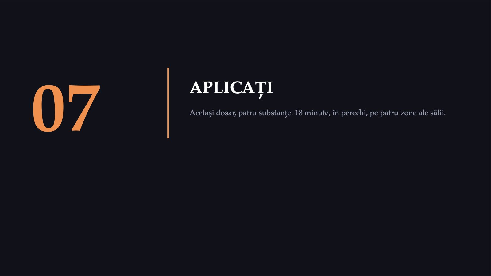
50 / 59Împărțim sala, pe rânduri, în patru zone. Vinieta apare pe ecran; nu se distribuie nimic tipărit. Mai întâi explic sarcina.
Aceeași vinietă. Un singur lucru diferă.
![EXERCIȚIU PERECHI · 4 ZONE · 18 MIN Aceeași vinietă. Un singur lucru diferă. ZONA A ALCOOL ZONA B CANABIS ZONA C ALPRAZOLAM prescris acum 20 de luni, procurat și din alte surse ZONA D HEROINĂ fumată VINIETA — fictivă, pe ecran, identică pentru toate zonele Valori ipotetice. M., 24 de ani, consum de 20 de luni. În ultimele 12 luni: cantități mai mari decât intenția · două încercări eșuate de reducere · mult timp pentru procurare și recuperare · două termene ratate · toleranță · cinci conflicte familiale. 6 min Cu colegul de bancă: criteriile DSM-5-TR îndeplinite din cele 11, numărul lor și severitatea. Vot pe telefon. 5 min Ce se întâmplă cu M. în sistemul JURIDIC românesc? Folosiți art. 4 din Legea 143/2000, afișat pe ecran. Vot pe telefon, pe zone. 4 min Ce se întâmplă cu M. în sistemul MEDICAL românesc? Cine îl vede, unde e trimis, ce tratament există. 3 min Se proiectează cele patru distribuții de răspunsuri, una lângă alta. Fără comentarii până la încheierea tuturor lecturilor. Nu se administrează niciun instrument de screening participanților din sală, nici anonim. Se lucrează exclusiv pe vinieta de pe ecran. Zonele NU știu că tabloul clinic este identic.](diapozitive/C01/051.jpg) 51 / 59
51 / 59În primele șase minute nu răspund la întrebări de conținut: totul este pe ecran. La final se proiectează cele patru distribuții de răspunsuri, una lângă alta; nu comentăm până la încheierea tuturor lecturilor.
Un diagnostic. Trei regimuri juridice.
![DEBRIEFING Un diagnostic. Trei regimuri juridice. A · ALCOOL Nicio consecință penală pentru cumpărare sau deținere. B · CANABIS Drog de risc. Închisoare de la 3 luni la 2 ani sau amendă. Art. 4, alin. 1 C · ALPRAZOLAM Drog de risc. Cu prescripție: nu e „fără drept” (interpretare). Fără: ca la B. Prima rețetă a semnat-o un medic. D · HEROINĂ Drog de mare risc. Închisoare de la 6 luni la 3 ani. Art. 4, alin. 2 Aplicate corect, criteriile dau același rezultat în toate zonele: șase criterii, aceeași severitate. Este aceeași vinietă. Diferența nu este în creier și nici în criterii, ci în tabelele anexate legii. Pentru faptele de la art. 4 (B, D; C fără prescripție), procurorul poate dispune evaluarea consumatorului (art. 19). Legea nr. 143/2000, art. 1, art. 4 și art. 19, forma consolidată la 29 martie 2025 (legislatie.just.ro); tabelele anexă I și III](diapozitive/C01/052.jpg) 52 / 59
52 / 59Tabloul clinic era identic. Aplicate corect, criteriile dau același rezultat în toate zonele: șase criterii, tulburare severă. În zona C, regimul juridic depinde de proveniența medicamentului. Evaluarea consumatorului, de la articolul 19, se poate dispune numai când fapta intră sub incidența articolului 4.
Aceeași faptă, trei forme ale legii
![ROMÂNIA · ART. 4, LEGEA NR. 143/2000 Aceeași faptă, trei forme ale legii 2000 — forma inițială Închisoare de la 2 la 5 ani Fără distincție risc / mare risc; fără amendă. Consumul: cură sau supraveghere medicală (art. 27). Din 1 februarie 2014 — în vigoare Risc: 3 luni – 2 ani sau amendă Mare risc: 6 luni – 3 ani Distincția risc / mare risc: Legea nr. 522/2004. Pedepsele actuale: Legea nr. 187/2012. Între formele succesive ale legii nu s-a schimbat farmacologia substanțelor, ci decizia de politică penală (interpretare). Politica este subiectul următoarelor șase sesiuni. Monitorul Oficial nr. 362 din 3 august 2000 (forma inițială) · Legea nr. 522/2004 · Legea nr. 187/2012 · forma consolidată la 29 martie 2025, verificată pe legislatie.just.ro](diapozitive/C01/053.jpg) 53 / 59
53 / 59Între formele succesive ale legii nu s-a schimbat farmacologia substanțelor, ci decizia de politică penală (interpretare). Politica este subiectul următoarelor șase sesiuni.
Ce rămâne din aceste două ore
![SINTEZĂ Ce rămâne din aceste două ore 20% · 5% Consumatori regulați în Vietnam; încă dependenți în primul an acasă, dintre cei dependenți acolo Drogul era același; contextul nu (interpretare). 67,5% / 8,9% Probabilitatea de dependență la nicotină față de canabis Substanța cu cel mai mare risc din tabel este legală și mai bine acceptată social. 83,7–99,2% Probabilitatea cumulativă de remisie, pe viață Remisia (nu neapărat abstinența) este evoluția cea mai frecventă (proiecții, SUA); mulți trec și prin recăderi. 7,1% · 2,0% Dependența în primul an de consum: cocaină față de nicotină În primul an, ordinea urmează dopamina; pe viață, se inversează (interpretare). 4 Situații în care o sursă reală e folosită pentru mai mult decât susține La microdializă, cifrele atribuite nici nu apar în articol. Surse: Robins și colab., 1975; Heather, 2017; Lopez-Quintero și colab., 2011a și 2011b](diapozitive/C01/054.jpg) 54 / 59
54 / 59Reluăm pe scurt ce rămâne din aceste două ore; argumentele le-ați văzut deja.
Trei reguli transferabile
![CE LUAȚI CU VOI Trei reguli transferabile 1 Separă mecanismul de destin Neurobiologia descrie în detaliu ce se întâmplă în creier după consum, dar prezice mult mai slab cine va deveni dependent (interpretare). Când cineva folosește o imagine cerebrală ca să prezică o traiectorie de viață, cereți studiul longitudinal. 2 Întreabă întotdeauna de unde vine cifra În două ore am întâlnit patru titluri, cu cifre, un citat și o imagine, care nu susțin tot ce li se atribuie. Din Sesiunea 2, le găsiți voi, într-un raport oficial. 3 Modelul pe care îl adopți are efecte secundare În studiile despre problemele psihice în general, explicația biogenetică a redus blamarea (g = −0,324) și a crescut pesimismul prognostic (g = +0,263). Alege-l cunoscând ambele direcții și spune-i pacientului și ce arată datele despre remisie. Valorile g: Kvaale și colab., Clin Psychol Rev, 2013 · Firul metodologic „de unde vine cifra?” revine în fiecare dintre cele șapte sesiuni ale cursului.](diapozitive/C01/055.jpg) 55 / 59
55 / 59Trei reguli pe care le luați cu voi.
Peste câțiva ani veți avea dreptul să semnați
![ȘI A PATRA, CARE NU SE DEDUCE DIN NICIUN TABEL Peste câțiva ani veți avea dreptul să semnați o rețetă de benzodiazepine sau de opioide. Benzodiazepinele dezinhibă, la șoarece, neuronul dopaminergic din VTA prin subunitatea α1, ca agoniștii opioizi μ (la șobolan): ambele acționează asupra interneuronilor GABA-ergici. Recompensa cere și α2, posibil α3. Extinderea la alprazolam și la om este o inferență. Diferența dintre pacientul din varianta C și cel din varianta D nu a fost creierul. A fost calea de acces: rețeta, față de piața ilicită (interpretare). Peste câțiva ani, acela veți fi voi.](diapozitive/C01/056.jpg) 56 / 59
56 / 59Mesajul clinic nu depinde de subunitate: dependența fizică de benzodiazepine poate apărea chiar conform prescripției (FDA, 2020), iar ghidul din 2025 recomandă întreruperea treptată.
Limitele interpretării
![CE NU PUTEM AFIRMA Limitele interpretării DE CE ESTE PE ECRAN Ce nu a putut fi verificat în sursa primară nu se afișează ca cifră. Consumul este declarat de respondenți, nu măsurat; datele NESARC sunt din SUA. Lista completă este în notele de curs, la finalul unității. CE NU AM PUTUT VERIFICA — Procentele detaliate despre veteranii din Vietnam — Valorile pentru morfină, metadonă și etanol — Ponderea remisiilor fără tratament — Mortalitatea prin sevraj la benzodiazepine — Respingerea „Rat Park” de Science și Nature — GPS 2024: valori diferite în două documente Când lipsește cifra, spuneți că lipsește; nu o aproximați. Notele de curs C01, caseta „Limitele interpretării”; registrul afirmațiilor și al surselor](diapozitive/C01/057.jpg) 57 / 59
57 / 59Ce nu am putut verifica nu apare pe ecran ca cifră. Când lipsește cifra, spunem că lipsește. Lista completă este în notele de curs.
Ultimele opt minute
![KAHOOT · 20 DE ITEMI EVALUARE FORMATIVĂ Ultimele opt minute Fără miză de notă. Banca de itemi a titularului, revizuită. Fiecare item are sursa afișată după răspuns. 5 itemi de deschidere: 3 reiau votul de calibrare, 2 privesc tranziția și saltul mecanism–politică 5 itemi de mecanism molecular (LO1) 5 itemi despre dopamină, dependență și remisie (LO2) 5 itemi de calitate a dovezii — de unde vine cifra (LO5) Ultimii cinci itemi sunt cei care contează. Nu testează ce știți despre droguri — testează dacă ați reținut să întrebați de unde vine cifra.](diapozitive/C01/058.jpg) 58 / 59
58 / 59Kahoot-ul nu are miză de notă. Sursa fiecărui item apare după răspuns. Ultimii cinci itemi verifică dacă ați reținut să întrebați de unde vine cifra.
Sursele acestei sesiuni
![VERIFICABIL Sursele acestei sesiuni DOI-urile au fost confirmate după identificator, iar paginile oficiale au răspuns la verificare, în septembrie 2026; pagina EUDA, care blochează accesul automat, a fost consultată în arhiva Wayback. Neurobiologie moleculară Di Chiara & Imperato 1988 · Johnson & North 1992 · Ritz 1987 · Picciotto 1998 · Tapper 2004 · Pertwee 2008 · Vengeliene 2008 · Tan 2010 · Löw 2000 · Engin 2014 și 2023 · Pfeiffer 1986 · Ribeiro 2010 · Volkow, Michaelides și Baler 2019 Imagistică umană și primate Bossong 2009 și 2015 · Stokes 2009 · Barkus 2011 · Bloomfield 2016 · Volkow 1993 · Morgan 2002 · Nader 2006 · Berridge 2016 · Cannon 2003 Epidemiologie și modele Robins 1975 și 1993 · Heather 2017 · Lopez-Quintero 2011 ×2 · Volkow și Blanco 2023 · Heyman 2013 · Leshner 1997 · Koob și Le Moal 1997, 2001 · Koob și Volkow 2016 · Hall 2015 · Kvaale 2013 ×2 · Loughman și Haslam 2018 · Nutt 2010 · Crossin 2023 · Rolles și Measham 2011 · UNODC 2026 · EUDA 2026 · ANPCDDA 2025 · GBD 2023 Surse primare de politică Nixon, transcript din 17 iunie 1971 · Legea nr. 143/2000 (art. 1, 4, 19; art. 27 în 2000) · Legile 522/2004 și 187/2012 · DSM-5-TR 2022, prin Hasin 2013 și ghidul NYSDOH · FDA 2020 · ghidul ASAM 2020 (alcool) și 2025 (benzodiazepine) · CMS (legea parității) Registrul complet al surselor și al afirmațiilor, cu locatorul fiecărei cifre, este în notele de curs de pe site-ul cursului. Evaluarea: policy brief de o pagină (60%) și chestionar de 15 grile din cazurile din sală (40%); dezbaterile nu se notează.](diapozitive/C01/059.jpg) 59 / 59
59 / 59Dacă o cifră nu are sursă pe diapozitiv, întrebați. Registrul complet al surselor este în notele de curs de pe site-ul cursului. Evaluarea: policy brief de o pagină, 60%, și chestionar de 15 grile din cazurile din sală, 40%.
Săgeți sau spațiu: navigare · O: vedere de ansamblu · N: notele prezentatorului · F: ecran complet · Esc: închidere